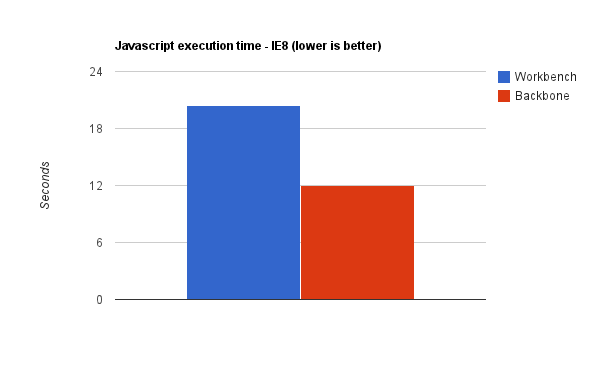
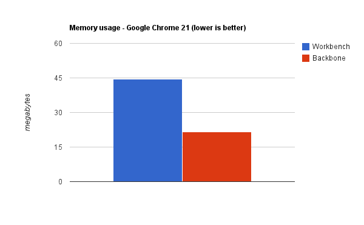
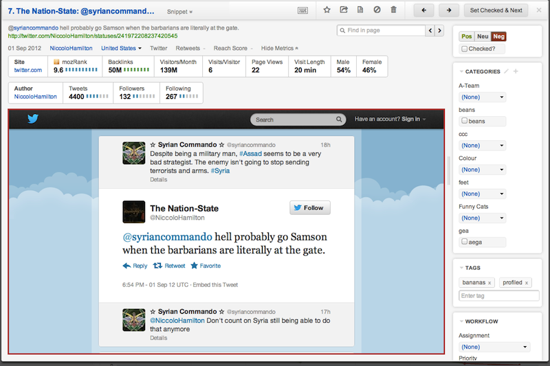

History
- Initial implementation of the current Brandwatch app is called 'Workbench'
- Built on an in-house framework circa 2010, as at the time there were no mature alternatives
- Despite being a great technical achievement for the time, it had significant performance and maintainability problems
Backbone - Timeline
- Started as a Funky Friday project in February 2011
- The project quickly proved viable, and dev time for the UI and UX teams started to be assigned to the migration in Q2 2011
- In lieu of a better name, the project became known simply as 'Backbone'
Backbone - Migration Plan
- Replace Components one at a time
- Once that was done, replace the core of the app
- This second step is what we're doing this weekend
- This strategy allowed us to reap the performance benefits incrementally over the year and a bit
Benchmarks
This final step should yield another speed bump
To verify, using javascript benchmarking software:
- Load the login page
- Log in
- Search for a project in the projects list
- Open a default dashboard
- Wait for the summary component to fully load
Tests were performed on Integration last week, using both applications against the same project/query
Benchmarks - Results 1
Application speed has greatly increased, especially in IE8
| Workbench (IE8) |
Backbone (IE8) |
| 20.4s |
12.0s |

* Figures show the time the browser spends executing javascript. It DOES NOT include time to fetch data
** Profiling slows the app down. 'Real world' performance is better for both apps
Benchmarks - Results 2
Memory usage has significantly decreased
| Workbench (Chrome 21) |
Backbone (Chrome 21) |
| 44.41Mb |
21.59Mb |

Lower memory usage makes the app usable on low-end machines, eg tablets
Other changes
- Redesigned Single Mention View
- User/Client admin has been replaced and is MUCH faster
Single Mention View

Look on stage, check out the resizable sidebar and direct any questions to Julius
←
→
/
#